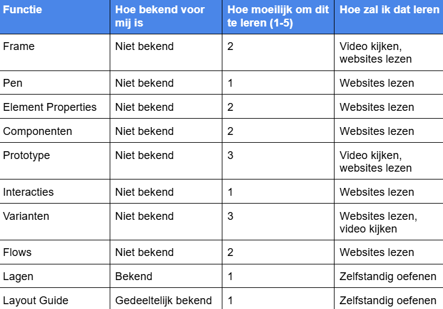
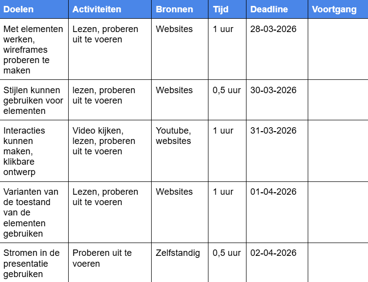
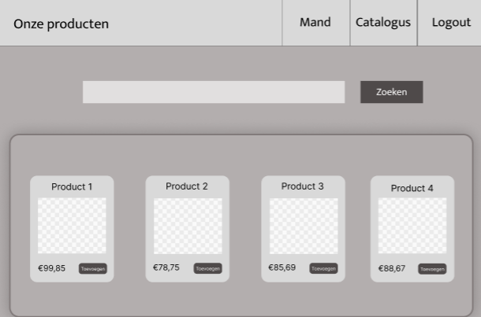
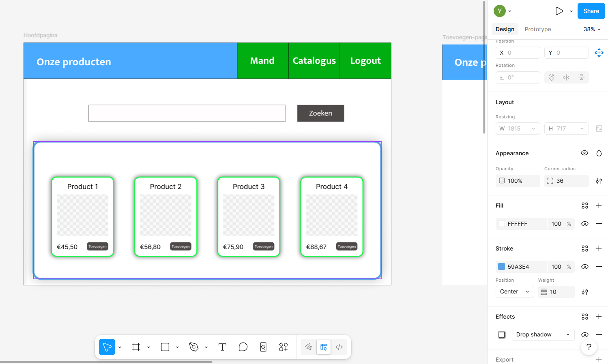
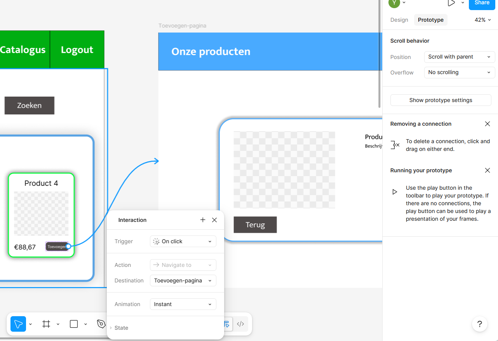
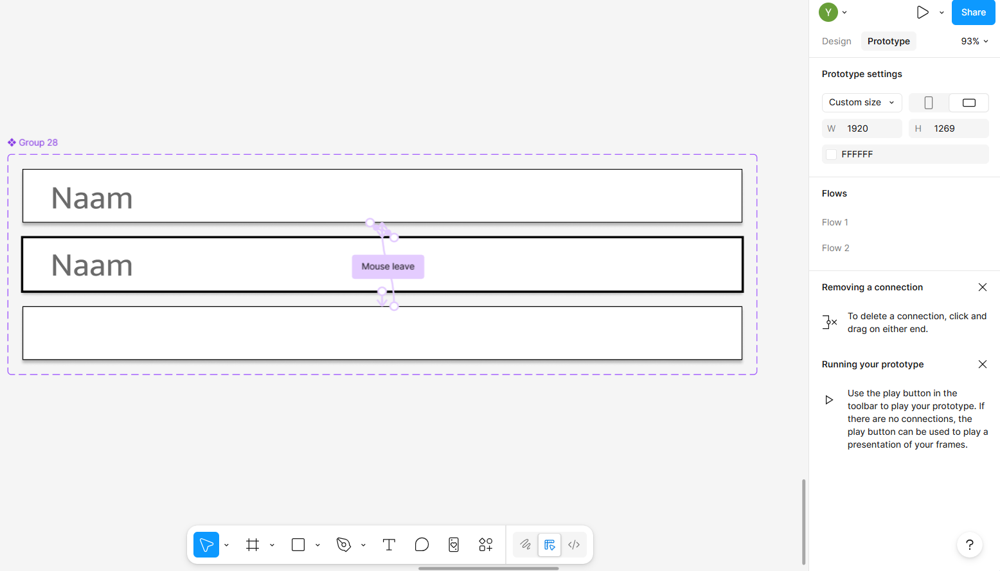
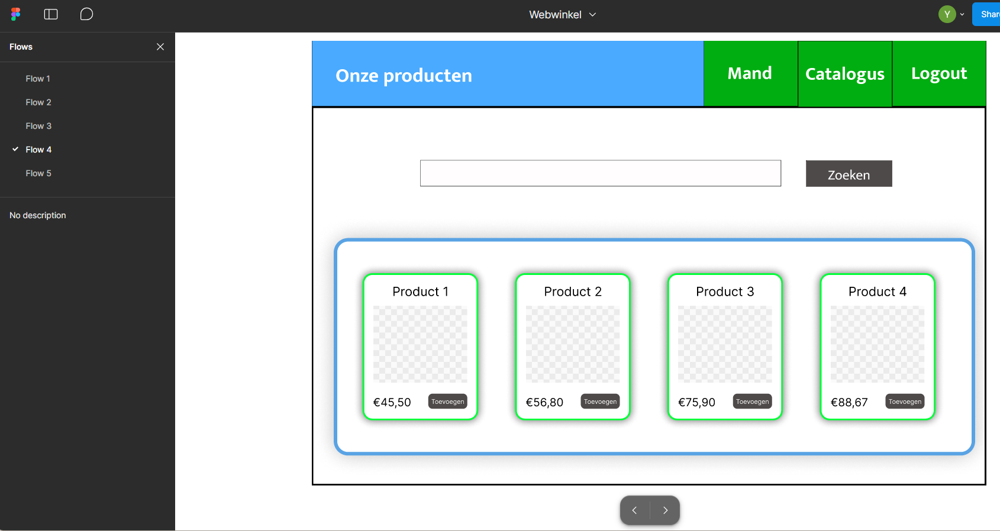

VROEGERE ERVARING
Vroeger wist ik geen Figma, maar voor wireframes, mock-ups en diagramen gebruikte ik Canva. Canva is een zeer gebruiksvriendelijk online platform voor het creëren van ontwerpen, posters, flyers, cv's, presentaties, en zelfs voor bewerkeningen van video's. Voor deze software hoef je niet per sé ervaring hebben, omdat functionaliteit heel simpel is.
Canva lijkt op Figma, maar Figma wordt meestal voor het bouwen vaan ontwerpen voor de applicaties en websites gebruikt. En ook voor het creëren van prototype. Terwijl Figma biedt mogelijkheden om interactieve ontewerpen te bouwen met gebruik van functies die voor dit bedoeld zijn, denk aan auto-layout, interacties, varianten van de toestand van een element en stromen, Canva is bedoeld voor meer simpele dingen.
Wat betreft oovereenkomsten, beide software zijn cloudgebaseerd en bieden real-time samenwerking. Daarnaast bieden die sjablonen en herbruikbare assests. Figma en Canva hebben dezelfde modelijkheden voor opmaak van een element: schaduwen, strepen, lettertypen, transpasrantie enzovoort. Beide zijn gratis.
Ik heb functies van Figma bekeken en alle functies op die ik had opgelet zijnj voor mij helemaal niew. Alleen maar Lagen gebruikte ik in Visual Studio vroeger en met Layout-opties had ik te maken in HTML/CSS. Meestaal leer ik zulke dingen door het lezen en vide's kijken. Als ik een functie niet veel ken, maar heb wel ervaring, dan kan ik met die gewoon een beetje oefenen. Als het moeilijk wordt om iet te leren, kijk ik video's en in ieder geval hou ik van korte en heldere uitleg.

LEERDOELEN
Ik wil kunnen een protorype volledig kunnen bouwen en presenteren. Om dit te kunnen moet ik aantal benodigde functies te leren. Voor het eerst moet ik proberen een wireframe te bouwen, daarna stijlen toepassen, zodat het meer op mock-up zal lijken. Verder ga ik deze ontwerp werkend maken door het toevoegen van interacties. Als dat klaar is, werk ik verder aan login- en registratie-formuliren. Velden moeten ten minste op cursor reageren, daarom ga ik Varianten-functier bestuderen. En als laatste wil ik stromen voor de presentatie toepassen. Dus, mijn planning bestaat uit 5 leerdoelen die vervolgens mijn stappen zijn.

LOGBOEK
Eerste stap
Hier heb ik al wireframe gebouwd van catalogus-pagina van een webwinkel. Ik gebruikte ng bijna geen stijlen hier. Op dezelfde manier had ik ook product-pagina en mand-pagina gemaakt.

Tweede stap
Tijdens deze stap heb ik stijlen van Figma geleerd zoals: Fill, Effects en Stroke. Ik heb variaties van deze stijlen gezien en begrijp nu volledig hoe dat werkt en waar dit is te vinden in Figma.

Derde stap
Toen alle pagina's al klaar waren, ging ik aan de slag met navigatie. Om navigatie te maken in Figma moest ik Interacties bestuderen. Eerst had ik van element een component gecreërd. Met behulp van Componenten kan je een element hergebruiken en Interacties aan deze toevoegen. Vervolgens voegde ik Trigger aan deze component toe, koos actie "Navigate to" en voor Destination werd de andere pagina gekozen. Zo deed ik met alle knoppen.

Vierde stap
In deze stap had ik miijn prototype afgerond. Laatste ding die ik nog wilde toevoegen was Varianten. Dat zorgt ervor dat interface meerr op de gebruiker reageert. In mijn geval gaat het over velden. Als iemand op de veld klikt, kan je meer geen placeholder zien. En als iemand cursor zet op die veld, dan rondom dit veldje een streepje verschijnt. Dat kostte me meer tijd om hoe dat doen te begrijpen. Varianten werken ook via Interacties. Alle drie varianten worden naar een groep verwerkt en daarna via Assests kan je die in formulieren gebruiken.

Vijfde stap
Prototype is klaar om te gebruiken en ik wilde nog presentatie wat handiger maken. Daarom keek ik een korte video over dit onderwerp. Ik deed mijn presentatie niet ingewikkeld, maar dat hielp me deze functie te begrijpen.
